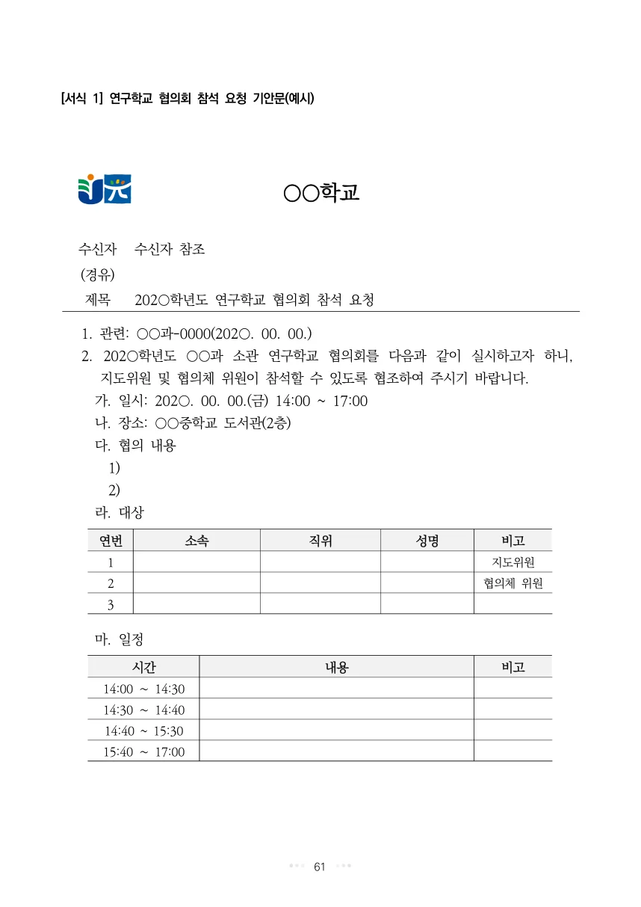
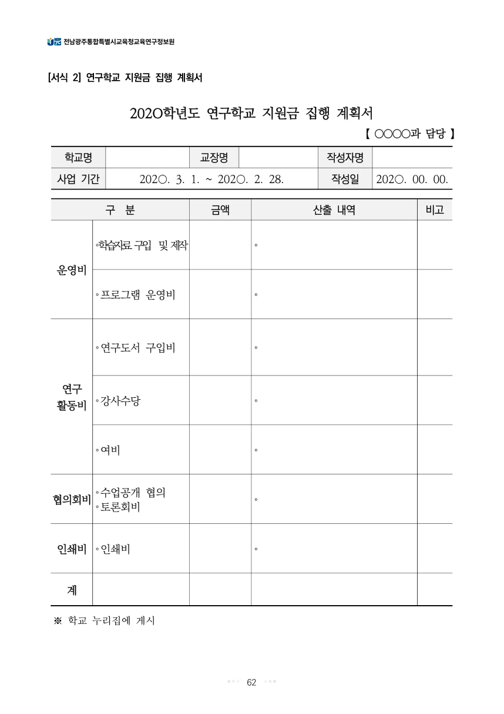
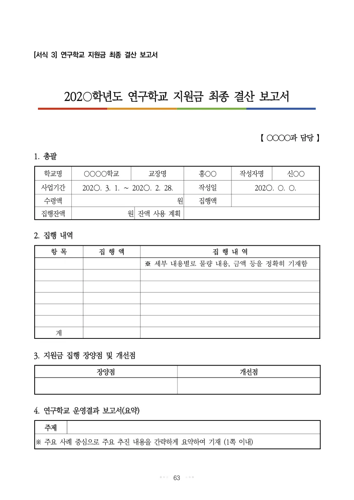
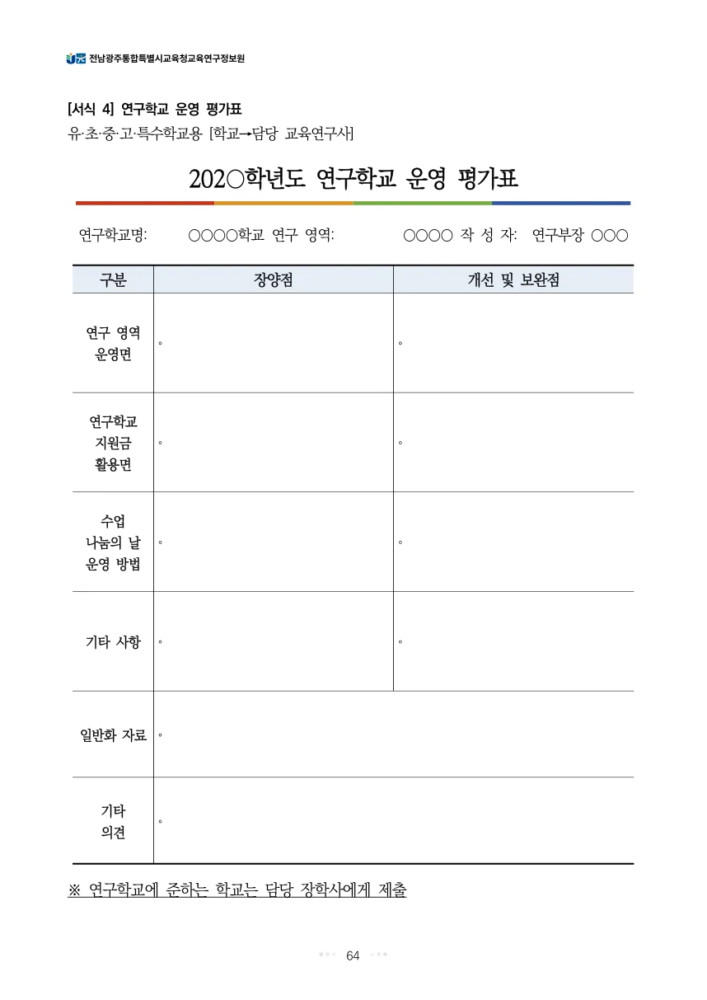
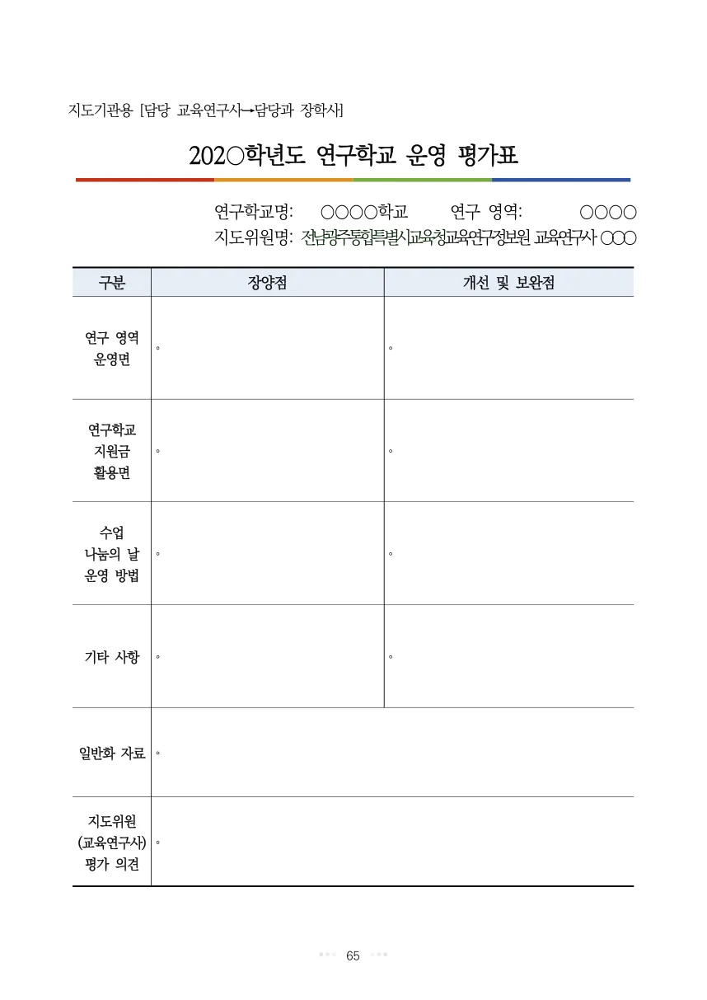
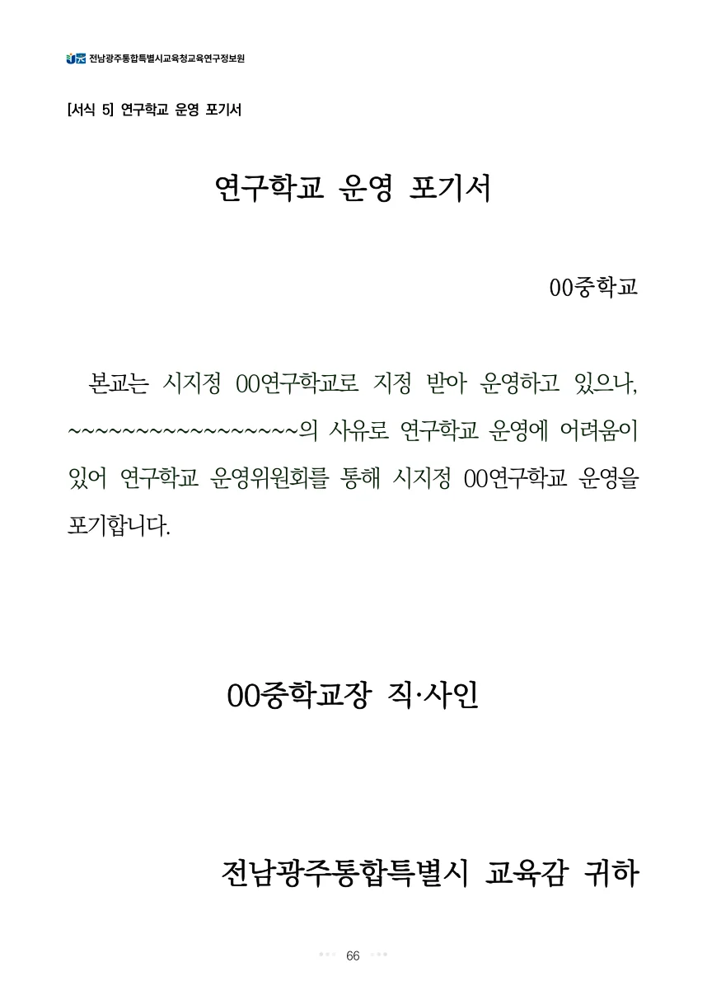
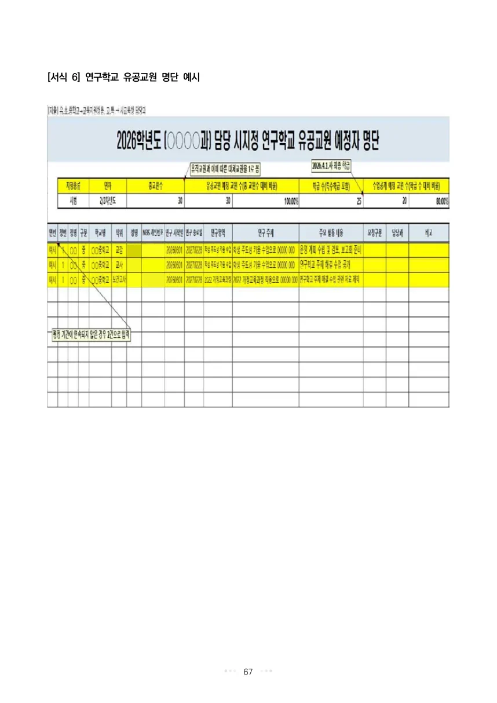
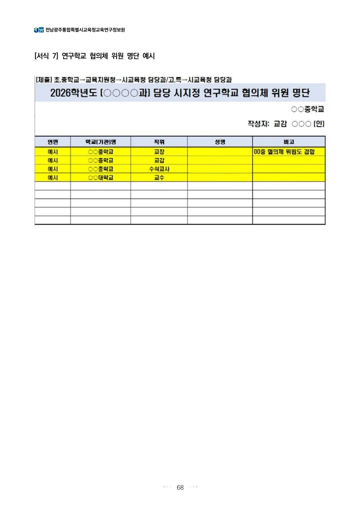

협의회 참석 요청 기안문
지도위원과 협의체 위원에게 협의회 참석을 요청할 때 사용합니다.
미리보기

길라잡이 부록의 서식 7종을 미리보고, 등록된 작성용 파일을 내려받으세요.
제출 기한과 서식은 해당 연도 연구학교 기본계획과 지정 공문에서 확인하세요.
지도위원과 협의체 위원에게 협의회 참석을 요청할 때 사용합니다.

연구과제에 필요한 운영비와 연구활동비, 협의회비 등을 항목별로 편성합니다.

수령액, 집행액, 잔액과 항목별 집행 내역을 정리합니다.

운영의 장양점과 개선·보완점을 학교용과 지도기관용으로 각각 작성합니다.


연구학교 운영 포기 절차에 쓰는 문서입니다.

유공교원 예정자 명단의 항목과 작성 예시를 확인합니다.

협의체 위원의 소속, 직위, 성명과 비고를 정리합니다.
